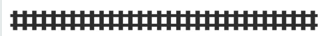

4. Répéter - for¶
Dans ce chapitre, nous découvrons comment utiliser une boucle for pour répéter un bloc d’instructions un certain nombre de fois. Nous allons voir que :
la boucle
forpermet de répéter des instructions,la structure
for i in range(x):permet de répéter un bloc x fois,le deux-points
:est toujours suivi d’un bloc en indentation.
La répétition¶
Revenons vers un exemple simple : dessiner un carré.
Si nous regardons le code de près, nous pouvons voir que nous répétons 4 fois les mêmes deux instructions forward() et left().
Ne serait-ce pas pratique de pouvoir dire à la tortue de répéter ces instructions 4 fois ?
Ceci est possible avec une boucle for. La ligne for i in range(4): va répéter 4 fois le bloc en indentation qui suit.
Par rapport à l’exemple précédent, nous avons rajouté un dot() à chaque sommet, et nous cachons la tortue à la fin avec la fonction hideturtle().
Exercice : Transformez le rectangle en triangle.
Polygone régulier¶
Avec une boucle for, nous pouvons simplifier le dessin des formes symétriques.
Observez bien la double indentation :
la première pour
defla deuxième pour
for
Dans les deux cas un : est suivi d’un bloc en indentation. En Python vous pouvez avoir multiples niveaux d’indentation.
Exercice : Définissez la fonction hexagone() pour dessiner un hexagone.
Escalier¶
Pour dessiner un escalier, il faut simplement répéter dans une boucle le dessin pour une seule marche.
Dents de scie¶
Pour dessiner des dents de scie, il faut simplement répéter dans une boucle le dessin pour une seule dent.
Exercice : Dessinez une usine avec un toit en dents de scie.
Éventail¶
Que se passe-t-il si nous dessinons une ligne (forward()/backward()) et tournons chaque fois d’un petit angle ?
C’est un peu comme un éventail qui s’ouvre.
Exercice : Doublez l’angle de rotation dans left().
Diaphragme¶
Que se passe-t-il si nous avançons plus que nous reculons ? Une toute petite modification du programme peut faire une chouette différence.
Exercice : Modifiez les valeurs dans forward() et backward().
Étoile¶
Voici une autre façon de toujours avancer, mais en tournant chaque fois d’un angle un peu plus petit que 180°. Essayons !
Exercice : Changez le nombre de pics de l’étoile.
Losange¶
Si nous déformons les angles d’un carré, nous obtenons un losange (diamant). Quelle forme obtenons-nous en dessinant un carré et deux losanges ?
Fleur¶
Si nous dessinons un losange 6 fois, nous obtenons une jolie fleur.
Exercice : Tournez un angle plus petit que 60°
Paquebot¶
Une boucle for est utilisée dans l’exemple suivant pour dessiner les hublots d’un paquebot.
Exercice : Créez une fonction paquebot() et dessinez-en un deuxième.
Cube de Rubik¶
Le Cube de Rubik est un casse-tête inventé par Ernő Rubik en 1974, et qui s’est rapidement répandu sur toute la planète au cours des années 1980.
Pour dessiner la face rouge, nous dessinons d’abord une ligne, en répétant 3 fois un carré. Ensuite nous répétons 3 fois une ligne pour dessiner une surface.
La tortue¶
Voici quelques fonctions de la tortue.
Estampe¶
Vous pouvez laisser une impression de la tortue à sa position actuelle avec la fonction stamp().
Exercice : Modifiez le programme pour estamper seulement un sommet sur deux.
Forme¶
Vous pouvez changer la forme de votre tortue avec la fonction shape().
Exercice : Essayez les formes 'triangle' et 'arrow'.
Vitesse¶
Vous pouvez changer la vitesse de la tortue avec la fonction speed(s).
Le paramètre vitesse s peut varier entre 1 (le plus lent) et 1000 (le plus rapide). Sa vitesse par défaut est de 3. Mettre la vitesse à 0 choisit automatiquement la vitesse maximum.
Exercice : Augmentez graduellement la vitesse de la tortue.
Exporter en PNG/JPG¶
Pour directement sauvegarder votre dessin en format PNG, ajoutez ces lignes de code à la fin de votre dessin.
from tkinter import *
from PIL import Image
import io
cn = getscreen().getcanvas()
ps = cn.postscript(colormode='color')
file = io.BytesIO(ps.encode('utf-8'))
img = Image.open(file)
img.save('file.png')
Pour sauvegarder en format JPG appelez tout simplement votre fichier 'file.jpg' plutôt que 'file.png'.
Erreurs¶
Il est important de bien lire et comprendre les messages d’erreur. Dans cette section, vous allez découvrir les différentes catégories d’erreur et comment les corriger.
ImportError¶
Cette erreur survient lorsque vous essayez d’importer un module qui n’existe pas.
Exercice : Corrigez l’erreur d’importation.
SyntaxError¶
Cette erreur survient lorsque vous écrivez mal un mot-clé, ou si vous oubliez une ponctuation. Dans ce cas, le mot-clé mal écrit n’est pas reconnu et il n’est pas colorié correctement dans votre code.
Exercice : Corrigez les trois erreurs de syntaxe et remarquez les éventuelles différences de stylisation.
NameError¶
Cette erreur survient lorsque vous écrivez mal le nom d’une variable ou fonction.
Exercice : Corrigez les trois erreurs de nom.
TypeError¶
Cette erreur survient lorsque vous ne mettez pas le nombre d’arguments corrects pour une fonction.
Exercice : Corrigez les trois erreurs de type.
Exercice¶
Téléchargez un exercice.
Éditez-le dans un éditeur externe.
Déposez-le sur Moodle.
Pellicule¶
Une pellicule photographique est un support souple recouvert d’une émulsion contenant des composés sensibles à la lumière.
Dessinez une pellicule photographique. Utilisez une boucle for pour créer 4 trous de perforation. Utilisez une deuxième boucle pour répéter une trame.

Chemin de fer¶
Dessinez les rails d’un chemin de fer.

Utilisez une boucle for pour la répétition des traverses.
Wagon de métro¶
Dessinez un wagon de métro. Utilisez une boucle for pour les fenêtres. Utilisez la fonction dot() pour les roues.
Gratte-ciel¶
Dessinez un gratte-ciel avec \(n \times m\) fenêtres. Pour ceci, utilisez deux boucles imbriquées.
Jeu du moulin¶
Le jeu du moulin est un jeu de société traditionnel en Europe. Le plateau de jeu existait déjà dans la Rome antique. Aussi appelé jeu du charret (en Suisse), certains lui donnent le nom médiéval de jeu de mérelles, voire de marelle.

Pour les points d’intersection, utilisez la fonction dot(). La distance entre les lignes est de 50 pixels.
Vous constatez aussi une symétrie par 4. Donc avec un choix intelligent de fonction et de boucle for, vous pouvez réduire le nombre de lignes de code considérablement.